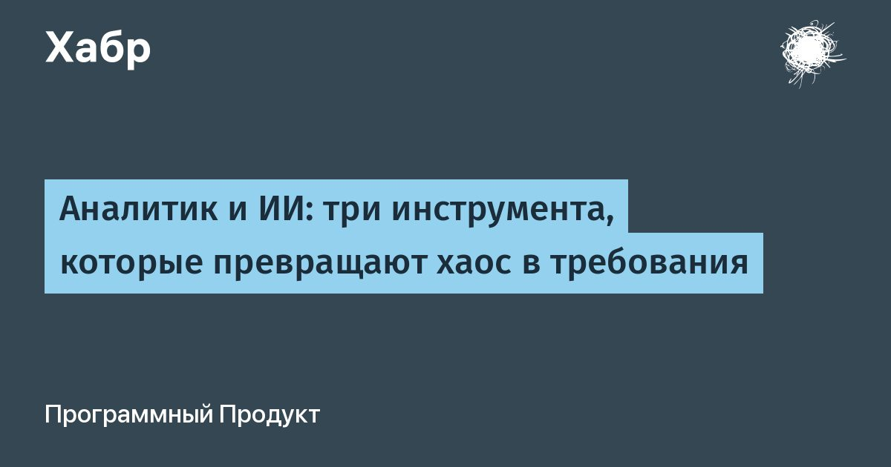

Аналитик и ИИ: три инструмента, которые превращают хаос в требования
Мы работаем на крупном проекте, где присутствует десятки интеграций, сотни бизнес-сценариев, документация в Confluence, а теперь ещё и описания бизнес-сценариев с помощью ИИ прямо в репозиториях.
Это здорово выручает для погружения в проект, но всё равно не покрывает всю картину при работе над конкретной доработкой.
Поэтому в команде аналитиков мы начали заводить собственных ИИ-агентов: собираем в папку нужные репозитории из Git, БФТ от заказчика, заметки со встреч, и вместе с агентом проектируем и анализируем.Дальше в статье мы разберём полный конвейер: как готовим данные для ИИ-агента, передаём ему контекст и затем превращаем результат анализа в готовое ЧТЗ.
Без нормальной подготовки на входе даже самый умный агент выдаст ерунду, а Markdown-результат на выходе ещё нужно оформить в корпоративный .docx.
Читать далее